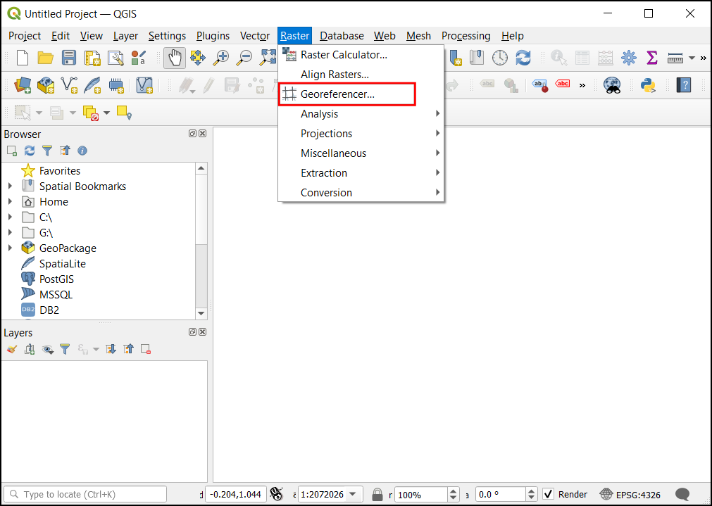
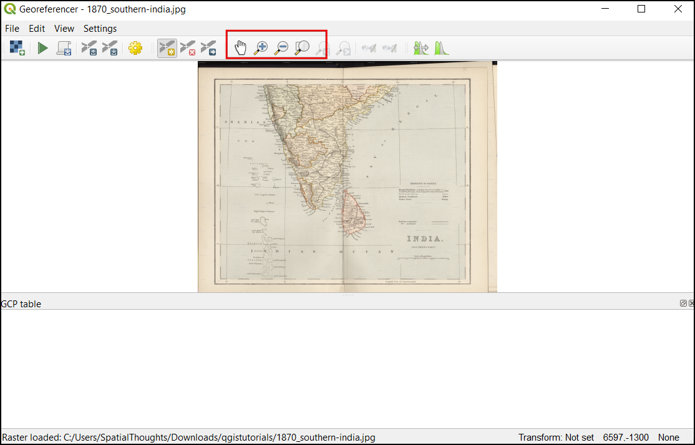
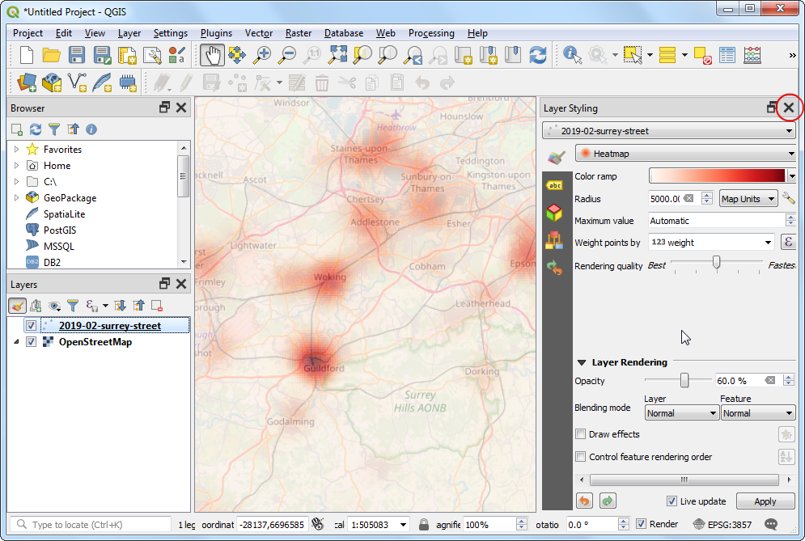

Georeferenciranje skeniranih topografskih kart (QGIS3)¶
Večina projektov GIS zahteva georeferenciranje nekaterih rastrskih podatkov. Georeferenciranje je postopek dodeljevanja koordinat realnega sveta vsakemu pikslu rastra. Velikokrat se te koordinate pridobijo s terenskim raziskovanjem - z napravo GPS se zberejo koordinate za nekaj zlahka prepoznavnih elementov na sliki ali zemljevidu. V nekaterih primerih, ko želite digitalizirati skenirane karte, lahko koordinate pridobite iz oznak na sami sliki. S temi vzorčnimi koordinatami ali GCP (Ground Control Points) se slika popači in prilagodi izbranemu koordinatnemu sistemu. V tem učbeniku bomo obravnaval koncepte, strategije in orodja v QGIS za doseganje visoke natančnosti georeferenciranja.
To navodilo je namenjeno georeferenciranju slike, ki ima informacije o koordinatah na voljo na sami sliki karte (tj. mreže z oznakami). Če vaša izvorna slika nima takšnih informacij, lahko uporabite metodo, opisano v Georeferencing Aerial Imagery (QGIS3)
Pregled naloge¶
Uporabili bomo skenirano karto južne Indije iz leta 1870 in jo georeferencirali z uporabo QGIS.
Česa se bomo še naučili¶
Kako določiti datum in koordinatni sistem za stare zemljevide.
Ustvarjeni GCP shranite.
Uredite ustvarjeni GCP in ga natančno prilagodite.
Pridobivanje podatkov¶
Hipkissova spletna stran Scanned Old Maps ima odlično zbirko skeniranih zemljevidov, ki niso avtorsko zaščiteni in jih lahko uporabite za raziskave.
Prenesite karto 1870 map of southern India in jo shranite kot sliko JPG na svoj trdi disk.
Lahko jih poberete tudi neposredno na spodnji povezavi:
Postopek¶
Odprite QGIS in kliknite , da odprete orodje.
Opomba
Od različice QGIS 3.26 naprej lahko Georeferencer zaženete iz .
Georeferencer je razdeljen na dva dela. V zgornjem razdelku je prikazana slika, v spodnjem razdelku pa je prikazana tabela z vašimi GCP-ji.

Zdaj bomo odprli našo sliko JPG. Pojdite na . Poiščite preneseno sliko skeniranega zemljevida in kliknite Open.

Slika se bo naložila v zgornji del. Če želite izvedeti več o karti, lahko v orodni vrstici uporabite gumbe za povečavo/premikanje.

Zdaj moramo nekaterim točkam na karti dodeliti koordinate. Če pogledate pozorno, boste videli koordinatno mrežo z oznakami. To so črte mreže zemljepisnih širin in dolžin.

Pred dodajanjem zemeljskih kontrolnih točk (GCP) moramo določiti nastavitve transformacije. V oknu za georeferenciranje kliknite ikono zobnika, da odprete pogovorno okno Nastavitve transformacije.

V pogovornem oknu Transformation settings izberite Transformation type kot
Polynomial 2. Če želite izvedeti več o različnih vrstah transformacije in njihovi uporabi, glejte `QGIS Documentation <https://docs.qgis.org/testing/en/docs/user_manual/working_with_raster/georeferencer.html?highlight=georeferencer#available-transformation-algorithms>``_. Nato izberite Resampling method kotNearest neighbor. Kliknite gumb Select CRS poleg Target SRS.

Če georeferencirate skeniran zemljevid, kot je ta, lahko informacije CRS pridobite iz samega zemljevida. Če pogledamo našo sliko zemljevida, so koordinate v obliki zemljepisne širine in dolžine. Podatkov o referenčni vrednosti ni, zato moramo predvideti ustrezno referenčno vrednost. Ker gre za Indijo in ker je zemljevid precej star, lahko stavimo, da nam bo datum Everest 1830 dal dobre rezultate. Poiščite
everestin izberite CRS z najstarejšo opredelitvijo datuma Everest (EPSG:4042). Kliknite OK.

Opomba
Topografski listi indijske geodetske uprave, izdelani med letoma 1960 in 2000, uporabljajo sferoid Everest 1956 in datum India_nepal. Če georeferencirate te topografske liste, lahko v QGIS določite CRS po meri z naslednjimi parametri in ga uporabite v tem koraku. Ta opredelitev vključuje parametre delta_x, delta_y in delta_z za pretvorbo tega datuma v WGS84. Za več informacij o Indian Grid System glejte to stran.
+proj=longlat +a=6377301.243 +b=6356100.2284 +towgs84=295,736,257,0,0,0,0 +no_defs
Opomba
Večina zemljevidov je ustvarjena z uporabo predvidenega CRS. Če zemljevid, ki ga poskušate georeferencirati, uporablja projicirani CRS, ki ga poznate, vendar so oznake mreženja v geografskem CRS (zemljepisna širina/dolžina), lahko za zmanjšanje popačenja uporabite alternativni delovni postopek. Namesto uporabe geografskega CRS, kot ga uporabljamo tukaj, lahko v QGIS ustvarite vektorsko mrežo in jo pretvorite v projicirani CRS, ki se uporablja kot referenca za natančen zajem koordinat. Za več podrobnosti glejte to stran.
Name your output raster as
1870_southern_india_modified.tif. ChooseLZWas the Compression. Check the Save GCP points to store the points as seperate file for future purpose. Make sure the Load in QGIS when done option is checked. Click OK.

Opomba
Nestisnjene datoteke GeoTIFF so lahko zelo velike. Zato je stiskanje vedno dobra zamisel. Več o različnih možnostih stiskanja TIFF (LZW, PACKBITS ali DEFLATE) lahko izveste v tem članku <https://kokoalberti.com/articles/geotiff-compression-optimization-guide>`_.
Now we can start adding the Ground Control Points (GCP). Click on the Add Point button.

Sedaj postavite križec na presečišča mrežnih črt in kliknite z levim gumbom miške, kar bo v našem primeru služilo kot ground-truth. Ker so linije mreže označene, lahko z njimi določimo koordinati X in Y točk. V pojavnem oknu vnesite koordinate. Ne pozabite, da je X zemljepisna dolžina in Y zemljepisna širina. Kliknite OK.

Opazili boste, da je v preglednici GCP zdaj vrstica s podrobnostmi o vašem prvem GCP.

Similarly, add more GCPs covering the entire image. The more points you have, the more accurate your image is registered to the target coordinates. The
Polynomial 2transform requires at least 6 GCPs. Once you have added the minimum number of points required for the transform, you will notice that the GCPs now have a non-zerodX,dYandResidualerror values. If a particular GCP has unusually high error values, that usually means a human-error in entering the coordinate values. So you can delete that GCP and capture it again. You can also edit the coordinate values in the GCP Table by clicking the cell in either Dest. X or Dest. Y columns.

Ko ste zadovoljni z GCP-ji, kliknite gumb Start Georeferencing. S tem se bo začel postopek deformacije slike z uporabo GCP-jev in ustvarjanja ciljnega rastra.

Ko se postopek konča, se v QGIS-u naloži georeferencirani sloj. Georeferenciranje je končano. Opazili boste tudi, da je Project CRS v spodnjem desnem kotu nastavljen na EPSG:4042, kot je opisano v razdelku Nastavitve transformacije.

Drag and drop the
OpenStreetMapas Base Map from the XYZ Tiles dropdown at the bottom of the Browser panel to verify the georeferenced layer. To set the transparency, click on the Open layer styling panel icon and select Transparency tab. Set the transparency to40 %. Now the georeferenced image must overlay with the basemap outline.

Če je treba georeferenciranje natančneje prilagoditi, lahko začnemo z zbranimi točkami GCP. Prebrskajte po lokaciji datoteke
1870_southern_india_modified.tif. Našli boste dodatno datoteko1870_southern_india_modified.tif.points. Ta datoteka vsebuje informacije o točkah GCP.

Odprite orodje za georeferenciranje v QGIS, kliknite in izberite
1870_southern_india_modified.tif.points. S tem boste naložili predhodno ustvarjene točke GCP. Nato naložite1870_južna_indija_spremenjen.tifin natančno uskladite svoje delo.

{kind=link}
{kind=link}
If you want to report any issues with this tutorial, please comment below. (requires GitHub account)